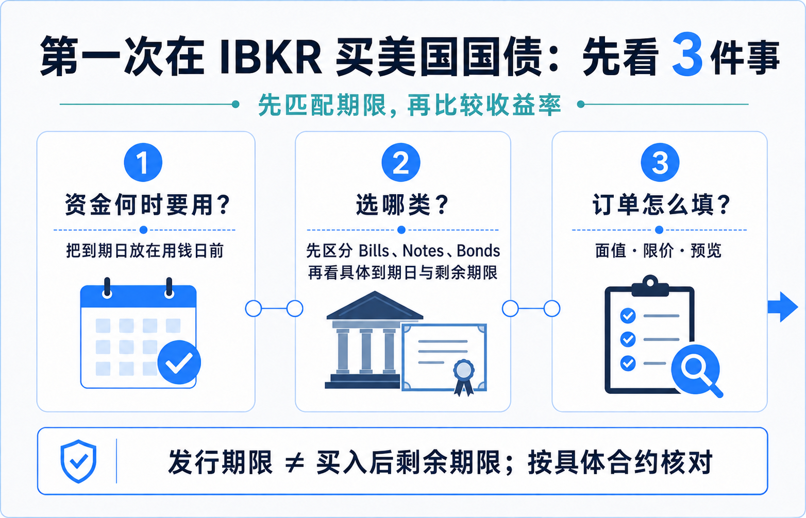
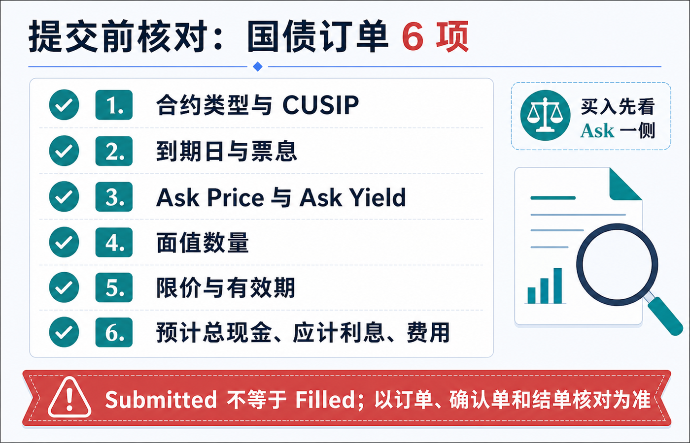

第一次用 IBKR 买美国国债：期限、收益率和下单界面怎么看
第一次在 IBKR 买美国国债，最容易踩的坑不是“不会点下单”，而是把不同概念看成同一个数字：期限、票息、到期收益率、买入价、面值和预计扣款彼此相关，却不相同。
先记住一个顺序：先按资金何时要用来选到期日，再比较同一范围内的收益率和价格，最后只按订单预览里的预计扣款与费用提交。 不要只看到一个高收益率，就跳过期限、流动性和价格核对。
本文是依据官方资料整理的订单阅读指南，不是个人成交或持仓记录。文内算例为教学假设，图示不是实盘截图；不构成投资、交易、开户、税务、法律或跨境资金建议。报价、合约、权限、菜单、费用与结算应按实际账户核对。官方资料核对日期：2026-08-23。

查看原图（新窗口，可缩放）
先选期限：把“何时用钱”放在收益率前面
美国财政部把可交易国债按期限分为几类：Bills 一般在一年以内，到期按面值兑付；Notes 常见为 2、3、5、7 或 10 年；Bonds 常见为 20 或 30 年。Notes 和 Bonds 通常每半年付息一次；Bills 则通常以折价买入、到期收回面值，而不是靠半年票息收款。美国财政部：国债定价与期限
对第一次下单的人，期限不是“越短越安全、越长越划算”的二选一。更实际的问题是：这笔现金大致在哪个日期可能要用？如果你预计在某个日期取用资金，就不应把“到期日前卖出也许能成交”当作与“持有到期”完全相同的事情。提前卖出时，成交价会受当时利率、剩余期限和买卖价差影响，可能高于也可能低于你的买入价。
上面的 2–10 年、20 或 30 年是常见发行期限，不是你今天买入后一定要等待的年数。一只最初发行期限为 10 年的 Note，二级市场买入时可能只剩几个月到期，仍不会因此变成 Bill。筛选时应读取具体到期日和剩余期限。本文重点是普通 Bills 与固定本金的 Notes/Bonds，不把这些现金流说明直接套用到 TIPS、FRNs 或 STRIPS。
可以先把选择拆成三步：
1. 写下大致用钱日期，而不是先挑收益率最高的一行。 2. 在这个日期附近筛选 Bills、Notes 或 Bonds，并确认具体合约的 Maturity Date（到期日）。 3. 只有在期限、币种和资金用途接近的候选之间，再比较收益率、价格、价差与预计成本。
这一步也能避免把“美国国债”当成单一产品。它是多个到期日、票息、发行批次和流动性条件不同的合约集合；名称相同，不代表订单风险和现金流相同。
收益率、票息和价格：屏幕上的百分比分别在说什么
价格与票息的比较需要先区分品种：普通固定利率附息国债与 Bill 的现金流不同。Bill 没有常规票息，不能把附息债的票息比较直接当成其收益计算公式。
Bills：通常看折价与到期金额
Bill 没有常规半年票息。你看到的回报主要来自买入金额与到期面值之间的差额，因此不要把它和“票息 4% 的 Note”按同一种现金流去理解。
Notes 和 Bonds：票息不是你此刻买入的回报率
Coupon（票息）是债券按面值计算的固定利息规则；Notes 与 Bonds 通常每半年支付一次。你在二级市场买入时，实际支付的价格可能高于、等于或低于面值，所以仅看票息不能代表今天买入后的回报。美国财政部：术语表
Yield to Maturity（到期收益率，常写作 YTM）则把当前买入价、未来票息和剩余期限放在一起，描述在特定假设下持有到期的年化回报指标。它不是保证收益，也不是账户马上到账的利息金额。美国财政部对价格与收益率关系的概括是：收益率高于票息时，价格通常低于面值；收益率低于票息时，价格通常高于面值；两者相等时价格接近面值。美国财政部：价格、票息与收益率
| 看到的字段 | 它回答什么 | 第一次下单该怎么用 |
|---|---|---|
| Type | 是 Bill、Note 还是 Bond？ | 先判断现金流结构和期限区间。 |
| Maturity Date | 哪一天到期？ | 与资金用途日期对照。 |
| Coupon | 按面值计算的票息规则 | 不把它当作当前买入收益率。 |
| Bid / Ask Price | 市场当前愿买、愿卖的价格 | 买入优先看 Ask 一侧，并留意价差。 |
| Bid / Ask Yield | 与对应 Bid 或 Ask 价格匹配的收益率 | 必须和同侧价格、同一合约一起看。 |
| Face Value / Quantity | 你买入的面值或数量 | 用订单预览确认最小单位和预计现金。 |
同一张报价表里，Ask Yield 与 Bid Yield 也可能不同，因为它们分别对应卖方要价和买方出价。不要把一边的收益率和另一边的价格拼在一起比较。
还要区分报价收益率与实际实现的回报：对附息债券，若希望持有到期的复合回报达到报价 YTM，还涉及票息按相应收益率再投资等假设；未来再投资利率可能变化。税费以及换回其他币种时的汇率影响，也不能从报价 YTM 中直接读出。FINRA：理解债券收益率与回报
IBKR 下单界面：先找“可交易的具体合约”
IBKR 的界面会随 TWS、Client Portal、账户权限和版本变化。下面写的是阅读顺序，不把旧截图里的某个菜单位置当作永久规则。
在 TWS 中，IBKR 当前教学示例使用 US-T 搜索美国国债，再在合约选择器中筛选 Government Bonds、Tradable、Type、到期日、发行日和票息。选中具体债券后，可以把 Bond 专用的 Bid Yield / Ask Yield 等列加入报价窗口。IBKR Campus：在 TWS 输入美国国债订单
在 Client Portal 中，先确认账户已具备相应的交易权限；官方教学入口是 Trade → Order Ticket → Bonds。Bond Scanner 可用于按 CUSIP、到期日、Yield to Worst 或票息等条件缩小范围；筛选结果不代表账户一定能交易该合约。IBKR Campus：Client Portal 研究工具 IBKR Campus：Client Portal 订单票
如果市价、限价和有效期的区别还没有完全分清，先阅读第一次下单时市价单、限价单与有效期怎么选，再回到债券订单票核对价格边界。
无论用哪一个界面，第一次下单都先确认这一行是不是你要的合约：
- 类型：Bill、Note 或 Bond；
- 到期日和票息；
- CUSIP 或平台给出的唯一合约标识；
- 是否标为可交易，以及报价是否为当前可用报价；
- 报价的买卖两侧：
Bid是市场买方，Ask是市场卖方。买入时不能只看 Bid Yield。
IBKR 的 Bond Scanner 教学也显示，选中债券后会把类型、票息、到期日和标识带入订单行，再从订单区设置买卖方向、数量和订单类型。IBKR Campus：Bond Scanner 布局
第一次下单：按这个顺序填，不要跳到 Transmit

查看原图（新窗口，可缩放）
1. 先看 Ask，不是先看“最高 Yield”
买入者面对的是卖方报价。先把 Ask Price、Ask Yield、到期日、票息和可交易数量放在同一行核对；如果报价空白、时间不清楚或价差很宽，先不要根据一张静态截图猜成交结果。
2. 以面值填写数量，并核对最小单位
IBKR 的 TWS 教学说明，债券通常以 1,000 美元面值为常见基数；但具体合约的最小交易单位、可用数量和碎额规则仍要以当时订单票为准。IBKR Campus：美国国债订单输入
因此，填写 Quantity 后，不要只用“数量 × 1000”心算账户会扣多少钱。订单预览里的预计成本才是核对现金是否足够的依据。
还要分清“常见面值基数”“本张订单票的输入单位”和“当前合约最小可成交数量”。它们不是同一个限制，不能因为教学提到 1,000 美元，就认定每个国债合约都能以这个金额成交。
预览页里的现金、净资产和购买力不是同一个数字；需要时可对照券商账户六个余额字段的核对顺序，避免把购买力误当成可直接支付的现金。
3. 新手优先理解 Limit，而不是假定 Market 一定可用
IBKR 的教学提示，部分交易场所不接受市价单，并建议为债券输入限价及可接受的最高价格。限价单并不保证成交；它的作用是为可接受的价格设上限或下限。IBKR Campus：美国国债订单输入
对买入而言，限价应当是你愿意支付的最高价格。不要把屏幕上的 Ask、Mid、Yield 或 Coupon 直接当成限价栏必填值；先看订单票当前接受的是价格还是收益率输入，再看预览如何解释该订单。
4. Preview 要核对的是“总现金”，不只是债券价格
提交前至少逐项看：
| 预览项目 | 为什么要看 |
|---|---|
| 合约名称、CUSIP、类型、到期日 | 防止买到相近但不同发行批次的债券。 |
| 买卖方向与面值数量 | 防止 Buy / Sell 或数量单位填反。 |
| 限价与订单有效期（TIF） | 明确可接受价格和订单何时失效。 |
| 预计成交金额 / 预计扣款 | 不把报价数字误认为实际现金支出。 |
| 应计利息（如适用） | 二级市场买入有票息债券时，可能影响结算现金。 |
| 佣金、费用与可用现金 | 以预览显示为准，不依赖旧教程的费率截图。 |
在二级市场买入附息债券时，买方通常要向卖方补偿已累计但尚未支付的利息，这部分应计利息会加到交易价款中，不是券商额外收取的佣金。嘉信：固定收益术语表
财政部的购买说明则针对其发行购买场景：Notes、Bonds、TIPS 与 FRNs 的购买金额可能包含应计利息，Bills 不按同样方式支付应计利息。不能把这份发行说明直接当成 IBKR 二级市场订单的结算规则；实际金额仍需核对订单预览。美国财政部：购买可交易证券
模拟核对：为什么报价 99.50，扣款却可能超过面值？
以下只演示普通固定本金附息债券的算术，不是真实报价、成交或 IBKR 费率。假定订单明确按每 100 美元面值的净价报价，面值为 10,000 美元，净价为 99.50，预览另列应计利息 60 美元和费用 5 美元：
| 项目 | 本例计算 |
|---|---|
| 不含应计利息的债券金额 | 10,000 × 99.50 ÷ 100 = 9,950 美元 |
| 加入应计利息 | 9,950 + 60 = 10,010 美元 |
| 加入假设费用后的现金支出 | 10,010 + 5 = 10,015 美元 |
所以“净价低于面值”不保证“含利息和费用的扣款也低于面值”。若预览金额已经包含应计利息，不要再加一次；若界面采用其他报价或数量单位，先换成相同口径再计算。费用与应计利息在这里都是假设输入，不是最低收费或固定利息。财政部的每百元价格口径及 IBKR 按面值百分比换算金额的说明可用于理解算式，后者不同地区的费率表不能互相套用。
5. Submitted 不等于 Filled
点 Preview、Submit 或 Transmit 后，订单可能仍在等待、部分成交、被取消或被拒绝。成交结果要回到 Orders / Trades，并在后续确认单和结单中核对。限价单未成交不是系统故障，也可能只是你的价格尚未与市场匹配。
提交前检查清单
有解释不清的项目，先核实，不急着提交。
- [ ] 这个合约的到期日与资金用途匹配。
- [ ] 已区分 Bill、Note 与 Bond，并确认是否有半年票息。
- [ ] 没有把 Coupon、Yield、Bid 与 Ask 混为一谈。
- [ ] 已确认 CUSIP 或唯一合约标识、买卖方向和面值数量。
- [ ] 知道订单票输入的是价格还是收益率，并理解限价代表什么。
- [ ] 已在 Preview 中核对预计总现金、应计利息（如有）、费用、可用现金和订单有效期。
- [ ] 提交后回到订单状态、确认单和结单核对实际结果。
参考资料
- U.S. Treasury：Understanding Pricing
- U.S. Treasury：Glossary for Marketable Securities
- U.S. Treasury：Buying a Marketable Security
- IBKR：Bonds 产品页
- IBKR Campus：Enter US Treasury Orders in TWS
- IBKR Campus：The Bond Scanner Layout
本文曾参考既有资料中的旧版字段与常见误解；当前菜单和费用以文中链接的官方资料及账户预览为准。